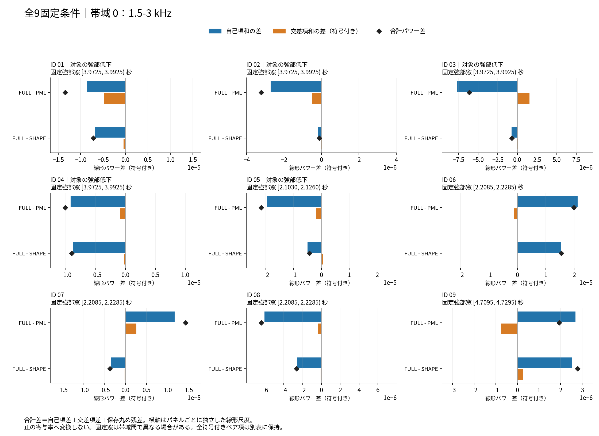
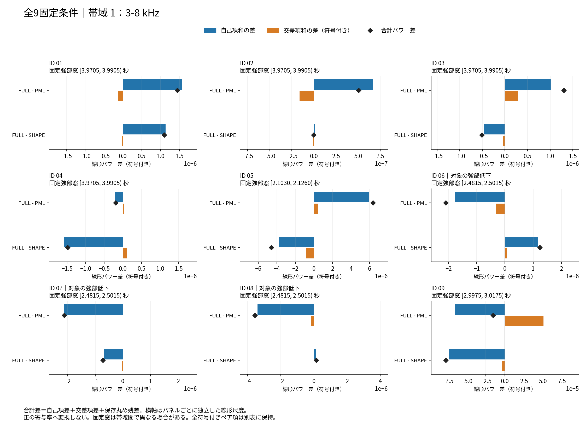
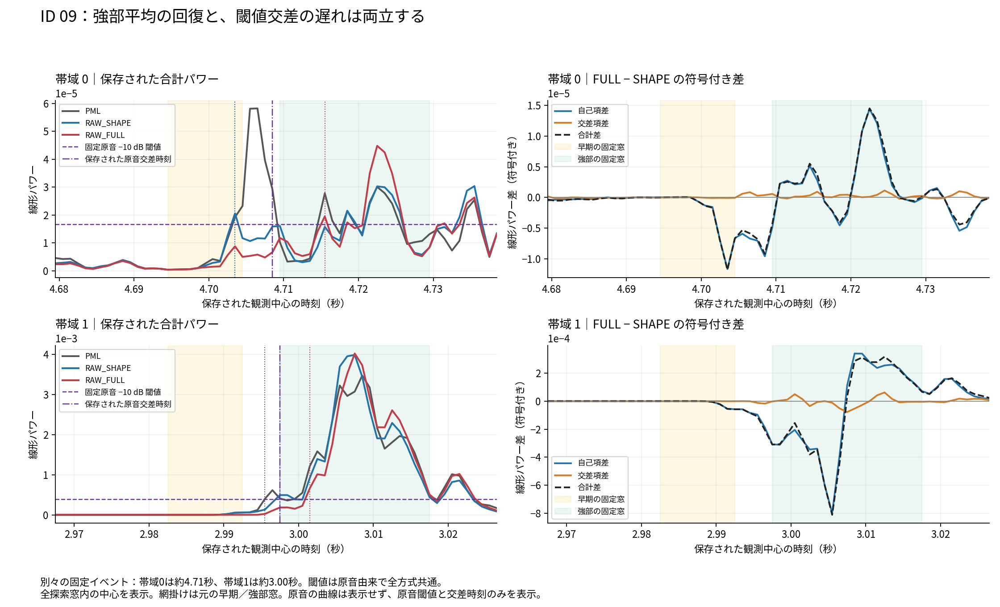

固定9条件の強部損失を、自己項と符号付き交差項から読む
4録音・9条件・27方式行・全18帯域イベント。旧失敗18点と事後改訂した観測尺度を併記。
2026-10-19 JST。基準はPML。RAW_SHAPE・RAW_FULLは未採用の比較対象。音声は既存のPML比較へ案内し、新音声は追加しない。
7kernelの確定結果と全体の入口 · 全27数値状態 · 保存要約
結論
既知の強部低下8イベントでは、FULL−PMLの自己項総和が8件すべてで減り、その差の絶対値は交差項差より大きかった。交差項差は6件で低下を加え、2件では一部を相殺した。したがって、今回の8件を「干渉だけによる損失」と説明することはできない。 これは符号付き線形power分解による記述であり、自己項が原因の何％という非負の責任配分ではない。
尺度復元の条件付き効果FULL−SHAPEは、対象8件のうち6件で強部を下げるが、ID06/08の対象帯域では上げる。それでもPML相対の損失は残る。一律に尺度復元を外せば解決する、という結論も支持されない。
追加の交差遅れ条件ID09では、band0のFULLはSHAPEよりstrong平均が+0.765dB高い一方、固定−10dB交差は12ms遅い。保存中心別分解では、早い交差付近の自己項減少と、後のstrong内の増加が共存していた。全窓平均cやstrong平均powerだけではこの時間差を説明できない。
今回得られたのは、固定観測における全cell自己項・全pair交差項の計算上の説明である。物理的な雑音分離、source-AMの因果、native F0正確性、知覚品質、RAW採用を確定するものではない。
1. 完了・来歴と数値的な限界
- 保存capture派生runは9/9条件、27/27行、exit0。完了の根拠は最終保存一覧付き終端記録。列挙54artifactを本集計でもSHA/bytes全照合し、集計後の不変を確認した。
- 取得ZIPは32,423,698 bytes、SHA
b11045e8ff57526e6370a8af8f6d339d5d0da4aa49cb1fb38f175c8e130e5fb7。新source freezeはd407f933451c0d01b7b088b9dd41a157e4d45a16fb2f88a90a8522b223b81de6。 - 再合成は行わず、旧27同一再現証拠をSHAで再利用。今回も保存native captureによる全27固定入力集合OLAのbytes一致を確認してから分解した。condition01の旧182配列は全件bytes一致した。
- 新しい時間入力L1基準のnormwise gateは全27・全中心で成立。eta最大は
3.0547323575163517e−16、要求係数は据置1e−12。旧失敗を見た後に観測尺度を改訂した契約であり、この事後改訂を隠さない。これは新尺度での観測一致であり、FFTの理論誤差上界やnotch bin相対精度の保証ではない。 - 旧per-bin gateのfalseは全9条件で18点を保持する。条件順に4/1/4/3/1/0/3/2/0点。旧runはcondition01で停止して4点だけを観測していたので、残8条件の14点追加とは矛盾しない。旧runの失敗を成功へ改訂していない。
- 旧power、保存power、Gram、自己項非負、全配列finiteの必須gateは全件成立。入力／source／capture master buffer／runtime moduleの事後照合も成立。
全9条件は、元の強部低下8条件と交差遅れ1条件から選んだ失敗の事後説明集合。4録音・7録音音高組であり、9独立録音、27独立実験、175独立cellではない。全5録音90条件の代表性、p値、信頼区間、因果相関は主張しない。
2. 定義：自己項と交差項
保存された固定80標本窓・FFT128の全65binから、帯域内Gramを作っている。band0は1.5–3kHz、band1は3–8kHzで、後者はNyquistを含まない。
- 自己項
d_i = Re(G_ii)、自己項和S = Σ d_i。 - 交差項
q_ij = 2 Re(G_ij)（元pulse順i<j）、符号付き交差和C = Σ q_ij。 - 完成波形からの観測power
P = S + C + 保存丸め残差。 - 方式差も
ΔP = ΔS + ΔC + Δ残差。全表は同じ固定region・同じ録音/pitch/seedの差である。
region Gramはそのregionの全中心Gramの単純平均。regionの Σ|平均q_ij| と 平均Σ|q_ij| は異なるので、両保存値をCSVに残した。負の交差項を落とさず、符号付き項をdB化せず、片側cellへ割り振らず、出力損失の割合へ正規化しない。
ΔC<0は「交差和が低下」を意味し、必ずしも「負の相殺が増えた」ではない。元も先もC>0なら正の加算が減った可能性がある。例えばID04/band0はこの区別が必要である。
3. 条件キー
| ID | 録音末尾 | 半音 | seed | cell枠 | 潜在支持交差組/方式 |
|---|---|---|---|---|---|
| 01 | 1188-133604-0003 | 0 | 20261015 | 14 | 384 |
| 02 | 1188-133604-0003 | -3 | 0 | 11 | 329 |
| 03 | 1188-133604-0003 | +3 | 0 | 17 | 453 |
| 04 | 1188-133604-0003 | +3 | 20261015 | 17 | 453 |
| 05 | 121-121726-0012 | -3 | 0 | 9 | 196 |
| 06 | 1089-134686-0032 | 0 | 20261015 | 24 | 651 |
| 07 | 1089-134686-0032 | -3 | 0 | 21 | 553 |
| 08 | 1089-134686-0032 | -3 | 20261015 | 21 | 553 |
| 09 | 1221-135766-0005 | 0 | 0 | 41 | 1068 |
175cell枠、4,640潜在支持交差組/方式、全65bin。幾何交差をactual非零寄与と読み替えない。名目cellを越えるkernel tailも固定潜在支持の対象に入っており、選択後の寄与が小さいからという理由で落としていない。
4. 全18strongイベント
以下のΔS/ΔC/ΔPは符号付き線形power。ΔPのdB欄は正の完成power比から得た既存観測で、符号付き項そのもののdBではない。*は既知の強部低下8イベント。原窓の端点は左閉右開で、帯域間の時刻を一致させていない。表示丸めのため表の和に小差が出るが、CSVは全精度と保存残差を保持する。
FULL − PML
| ID/band | 元strong窓 [s) | ΔS | ΔC | ΔP | 完成power差 dB |
|---|---|---|---|---|---|
| 01/0* | [3.9725, 3.9925) | -8.58765e-06 | -4.82262e-06 | -1.34103e-05 | -2.017 |
| 01/1 | [3.9705, 3.9905) | +1.56716e-06 | -1.21256e-07 | +1.44591e-06 | +1.883 |
| 02/0* | [3.9725, 3.9925) | -2.72249e-06 | -4.95797e-07 | -3.21829e-06 | -1.129 |
| 02/1 | [3.9705, 3.9905) | +6.67045e-07 | -1.62717e-07 | +5.04328e-07 | +1.012 |
| 03/0* | [3.9725, 3.9925) | -7.66464e-06 | +1.55556e-06 | -6.10908e-06 | -1.620 |
| 03/1 | [3.9705, 3.9905) | +1.01594e-06 | +2.88917e-07 | +1.30485e-06 | +1.834 |
| 04/0* | [3.9725, 3.9925) | -9.18199e-06 | -8.90934e-07 | -1.00729e-05 | -2.225 |
| 04/1 | [3.9705, 3.9905) | -2.18665e-07 | +2.26621e-08 | -1.96003e-07 | -0.343 |
| 05/0* | [2.1030, 2.1260) | -1.96674e-05 | -1.97884e-06 | -2.16462e-05 | -1.265 |
| 05/1 | [2.1030, 2.1260) | +5.93667e-06 | +4.28174e-07 | +6.36485e-06 | +0.437 |
| 06/0 | [2.2085, 2.2285) | +2.11833e-05 | -1.32542e-06 | +1.98579e-05 | +1.533 |
| 06/1* | [2.4815, 2.5015) | -1.76570e-06 | -3.24813e-07 | -2.09051e-06 | -1.333 |
| 07/0 | [2.2085, 2.2285) | +1.16126e-05 | +2.59265e-06 | +1.42052e-05 | +1.456 |
| 07/1* | [2.4815, 2.5015) | -2.13528e-06 | +1.00645e-08 | -2.12522e-06 | -1.654 |
| 08/0 | [2.2085, 2.2285) | -6.05113e-06 | -3.40701e-07 | -6.39183e-06 | -0.791 |
| 08/1* | [2.4815, 2.5015) | -3.39852e-06 | -1.66151e-07 | -3.56468e-06 | -2.062 |
| 09/0 | [4.7095, 4.7295) | +2.69466e-06 | -7.66670e-07 | +1.92799e-06 | +0.515 |
| 09/1 | [2.9975, 3.0175) | -6.59368e-05 | +5.04668e-05 | -1.54699e-05 | -0.037 |
FULL − SHAPE
| ID/band | 元strong窓 [s) | ΔS | ΔC | ΔP | 完成power差 dB |
|---|---|---|---|---|---|
| 01/0* | [3.9725, 3.9925) | -6.72858e-06 | -4.53590e-07 | -7.18217e-06 | -1.194 |
| 01/1 | [3.9705, 3.9905) | +1.13083e-06 | -2.90114e-08 | +1.10182e-06 | +1.355 |
| 02/0* | [3.9725, 3.9925) | -1.69765e-07 | +4.87514e-08 | -1.21014e-07 | -0.048 |
| 02/1 | [3.9705, 3.9905) | +9.67276e-09 | -1.13601e-08 | -1.68736e-09 | -0.003 |
| 03/0* | [3.9725, 3.9925) | -7.46145e-07 | +4.00660e-08 | -7.06079e-07 | -0.221 |
| 03/1 | [3.9705, 3.9905) | -4.65177e-07 | -4.69748e-08 | -5.12152e-07 | -0.551 |
| 04/0* | [3.9725, 3.9925) | -8.76588e-06 | -2.30043e-07 | -8.99593e-06 | -2.035 |
| 04/1 | [3.9705, 3.9905) | -1.58498e-06 | +1.05308e-07 | -1.47967e-06 | -2.099 |
| 05/0* | [2.1030, 2.1260) | -4.97269e-06 | +6.43172e-07 | -4.32951e-06 | -0.284 |
| 05/1 | [2.1030, 2.1260) | -3.76143e-06 | -8.21471e-07 | -4.58290e-06 | -0.290 |
| 06/0 | [2.2085, 2.2285) | +1.54482e-05 | +3.01342e-09 | +1.54512e-05 | +1.143 |
| 06/1* | [2.4815, 2.5015) | +1.16884e-06 | +6.85069e-08 | +1.23735e-06 | +1.038 |
| 07/0 | [2.2085, 2.2285) | -3.42276e-06 | -2.34659e-07 | -3.65742e-06 | -0.307 |
| 07/1* | [2.4815, 2.5015) | -6.86634e-07 | -3.64253e-08 | -7.23059e-07 | -0.636 |
| 08/0 | [2.2085, 2.2285) | -2.54796e-06 | -8.46574e-08 | -2.63262e-06 | -0.344 |
| 08/1* | [2.4815, 2.5015) | +1.29752e-07 | +5.06044e-09 | +1.34812e-07 | +0.101 |
| 09/0 | [4.7095, 4.7295) | +2.52523e-06 | +2.59784e-07 | +2.78502e-06 | +0.765 |
| 09/1 | [2.9975, 3.0175) | -7.31999e-05 | -4.28186e-06 | -7.74818e-05 | -0.183 |
この表から言えること
- 強部低下8件のFULL−PMLでは全件ΔS<0、|ΔS|>|ΔC|。ID03/band0とID07/band1はΔC>0なので自己項低下を一部打ち消す。他6件はΔC<0が差をさらに下げる。
- 対SHAPEで強部が上がるID06/band1（+1.038dB）、ID08/band1（+0.101dB）も、対PMLでは−1.333/−2.062dB。尺度復元の撤去だけでは元の損失集合を一律には解消できない。
- ID01は両bandのstrongに潜在交差するcell集合とcが同じでも、FULL−SHAPEのΔSがband0では負、band1では正。strong窓は[3.9725,3.9925)と[3.9705,3.9905)で2ms違う。平均cだけで各イベントを説明できない反例であり、周波数依存Mだけの単独原因を同定した比較ではない。
- ID03/04は同じplan・a²のseed対だが、ΔP/ΔS/ΔCは異なる。seedを独立録音へ数えず、一方だけを次候補の根拠にしない。


各panelは独立した線形横軸。青がΔS、橙がΔC、黒菱形がΔPで、正の寄与率へ変換していない。全18イベントを表示した。
5. 強部平均と交差時刻の関係
交差閾値は原音から固定したP_star×10^(dB/10)で全方式共通。各方式のstrong平均に合わせて閾値を動かしてはいない。保存search内の最初の観測中心で判定し、補間やonset再選択をしていない。
| ID/band | 元strong窓 [s) | FULL−PML ms | FULL−SHAPE ms | FULL−原音 ms |
|---|---|---|---|---|
| 01/0 | [3.9725, 3.9925) | -1.0 | +0.0 | +0.0 |
| 01/1 | [3.9705, 3.9905) | +1.0 | +0.0 | +0.0 |
| 02/0 | [3.9725, 3.9925) | +4.0 | +0.0 | +0.0 |
| 02/1 | [3.9705, 3.9905) | +4.0 | -1.0 | +0.0 |
| 03/0 | [3.9725, 3.9925) | +9.0 | +5.0 | +0.0 |
| 03/1 | [3.9705, 3.9905) | +7.0 | +7.0 | +0.0 |
| 04/0 | [3.9725, 3.9925) | +9.0 | +8.0 | +1.0 |
| 04/1 | [3.9705, 3.9905) | +4.0 | +6.0 | +0.0 |
| 05/0 | [2.1030, 2.1260) | +11.0 | +1.0 | +0.0 |
| 05/1 | [2.1030, 2.1260) | +11.0 | +1.0 | +0.0 |
| 06/0 | [2.2085, 2.2285) | +0.0 | +0.0 | +0.0 |
| 06/1 | [2.4815, 2.5015) | +6.0 | +0.0 | +0.0 |
| 07/0 | [2.2085, 2.2285) | +5.0 | +1.0 | +0.0 |
| 07/1 | [2.4815, 2.5015) | +1.0 | +0.0 | -1.0 |
| 08/0 | [2.2085, 2.2285) | +5.0 | +0.0 | +0.0 |
| 08/1 | [2.4815, 2.5015) | +2.0 | +0.0 | +0.0 |
| 09/0 | [4.7095, 4.7295) | +12.0 | +12.0 | +7.0 |
| 09/1 | [2.9975, 3.0175) | +6.0 | +4.0 | +4.0 |
ID01〜08の16帯域イベントではFULLの原音相対−10dB交差は−1〜+1ms。PML相対の後退を、そのまま原音のattack遅延とは呼ばない。ID09の二つのイベントは原音より+7/+4ms遅れ、別の時間帯である。
ID09/band0の保存中心による説明
PML/SHAPEが既に閾値を越える4.7035sの固定中心で、閾値は1.65790e−5。PMLのPは1.92676e−5、SHAPEは2.06268e−5に対し、FULLは8.83467e−6で閾値未満。FULL−SHAPEの自己項差は−1.16922e−5、交差項差は−9.99110e−8で、ここでも自己項差の方が大きい。
FULLが初めて閾値を越える4.7155sではP=1.95396e−5。strong全体[4.7095,4.7295)のFULL−SHAPEはΔS=+2.52523e−6、ΔC=+2.59784e−7、ΔP=+2.78502e−6となる。つまり早い部分の抑制と後の部分の増加が共存する。平均strongの改善は交差の早さを保証しない。
band1も、SHAPE交差2.9975sでFULLのP=1.83037e−4は固定閾値3.84030e−4未満。FULLは3.0015sで到達する。ここでstrong平均のFULL−SHAPEは−0.183dBと小さいが、時間内の正負変化はその平均だけでは表せない。原因を単一cellや単一負pairへ割り当てない。

この図は全保存search中心を表示し、early/strongは元の固定窓。原音のpower曲線自体は含まず、原音の閾値と保存交差時刻だけを示す。元crossing値の中心を読むだけで新しい交差イベントを選んでいない。全条件・全−30/−20/−10dB交差中心における3方式のP/S/Cはfixed-crossing-centers.csvへ保存した。
6. c・Mについて新しく分かった範囲
M、最終S、native前後kernelが今回の保存結果に揃い、c平均からの推測ではなく、窓後のcell自己項と全pairまで読めるようになった。FULL−SHAPEは固定された形状操作の下で尺度復元を行った条件付き差であり、PML→SHAPEと同一の介入ではない。Mを含む周波数混合、時間窓、taper、native丸め、重なりを経た後の分解である。
段階Aで低cが目立ったID03/04のcell525も省略していない。cは0.073785/0.072496で、Mは0〜1（2049bin中exact0が115、exact1が1874、その他60）。band0 strongのこのcellのFULL−SHAPE自己項差は−4.11679e−8/−5.15762e−9である。低cというだけで当該cellを全体の主因とする根拠にはならず、全cell・全signed pairの保存表と区別する。この自己項差を他cellとの交差項へ再配分しない。
7. 説明できたこと・残る限界
| 視点 | 今回説明できたこと | この結果だけでは決められないこと |
|---|---|---|
| 計測 | 固定窓内のPが全自己・全交差項と丸め残差で整合する。旧falseも残る | notch binの高い相対精度、未観測区間の完全分解 |
| 信号処理 | 8強部損失の自己項低下、交差差の加算/相殺、ID09の時間内の正負変化 | 物理的な周期成分／雑音正解の分離、source-AM原因 |
| 操作の比較 | FULL−SHAPEとSHAPE−PMLの条件付き差を全件保持 | 一律のc補正、特定pair除去、新方式が有効という外挿 |
| 実装 | 元waveと入力集合bytes、M/最終S/native kernel、全signed termsの来歴が接続 | 別runtime・別条件での同一性、別候補の成功 |
| 批評 | 平均c・平均strong・負pair比率だけの単純説明を退ける | 代表的品質改善、知覚品質、人間理解、正式120評価・採用 |
次の独立した介入計測へ進む場合も、この分解を「正解の損失配分」として補正係数へ直結させない。固定された別候補の全30条件と旧90参照を保ち、作用対象・無対象条件、音響損失、品質欠測を別々に記録する必要がある。この原因分析の集計では新候補実行や閾値探索を追加していない。別候補の後掛け30条件は生成済み・品質未測定で、本資料の寄与結果とは混ぜない。
8. 成果物
- summary.json：全18strongイベント、全27数値状態、旧false数、新normwise、固定8件の符号記述。
- all-18-strong-events.csv：元strong窓範囲、全3方式差、元交差差。
- region-observations.csv / region-differences.csv：全54region×3方式／全3差、162行ずつ。
- all-region-self-terms.csv：全1,050 cell-region行、3方式と全3差。
- all-region-signed-pairs.csv：全11,820 pair-region行。全3方式の複素Gram上三角実部・虚部、符号付きq、全3差。負・正・零を全件保持。全配列本体は本公開資料に同梱せず、公開表の全符号と元配列のSHA対応を残す。
- center-observations.csv / center-differences.csv：4,644行ずつ。各帯域search外の補助中心もフラグ付きで保持し、固定イベント測定とは混同しない。
- fixed-crossing-centers.csv：元18イベント×3level×3交差所有方式×3評価方式の486行。
- all-175-cell-descriptors.csv：全c/D0/D1/a²とM記述。平均cから利得を推定しない。
- all-18-legacy-Z-failures.csv / all-27-numerical-status.csv：旧失敗全点と新尺度の状態。
- source-evidence.json：全54元成果の照合、旧全波形同一性の再利用、今回の全27入力OLA一致、元結果のSHA。
- source-array-hashes.json：元capture・分解配列の型、形状、SHA。大きい配列本体は公開しない。
- observation-contract.json：固定窓・原音閾値・既存交差時刻・観測式。
3枚のPNGを実際に開き、ラベル、符号、全条件、窓範囲、軸と凡例の可読性を確認した。SVGも同梱。原音・新wave・新FFT・ML/F0・合成・ソフトウェアテストは追加していない。
全保存表・図へのリンク
- all-175-cell-descriptors.csv
- all-18-legacy-Z-failures.csv
- all-18-strong-events.csv
- all-27-numerical-status.csv
- all-region-self-terms.csv
- all-region-signed-pairs.csv
- all-strong-deltas-band0.png
- all-strong-deltas-band0.svg
- all-strong-deltas-band1.png
- all-strong-deltas-band1.svg
- center-differences.csv
- center-observations.csv
- fixed-crossing-centers.csv
- id09-fixed-crossing-and-signed-deltas.png
- id09-fixed-crossing-and-signed-deltas.svg
- region-differences.csv
- region-observations.csv
- summary.json


図の白背景は描画時の固定背景。本文はシステムのライト／ダーク設定に追従する。原音power曲線を含まないID09図では、原音は閾値と保存交差時刻のみである。